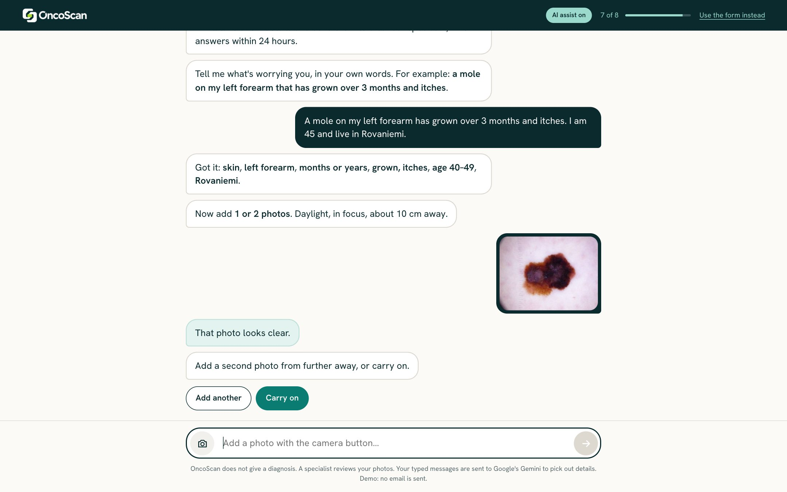
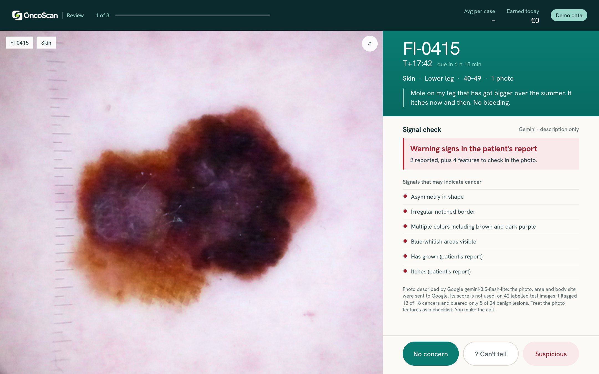

Send a photo.
A specialist answers in 24 hours.
The problem in Finland
Far from a specialist. Stuck in a queue.
Today
Four problems we solve.
Late detection
A worrying spot waits for an appointment.
Referral queue
The specialist sits behind a referral.
Treatment start
You still have to find and book a specialist.
No transparency
You can't see where your case is.
How it works for patients
Three steps. 24 hours.

Send a photo.
And your story, in a short chat.

A specialist reviews it.
Answer in 24 hours. Status is live.

Book the nearest.
Closest specialists first, with free times.
How it works for doctors
One screen. One key to sign.

- 1See the photo.Large, with the patient's own words.
- 2Check the signals.Warning signs, and signs against.
- 3Sign the verdict.No concern, suspicious, or better photo.
Why it's simple
Simple on purpose.
photos from a phone
details, asked in a chat
target for an answer
apps to install
What we tested
We measured the AI. The doctor decides.
- Live
Patient to doctor to result, working today.oncoscan.pgf.lv
- 13/18
cancers flagged by a general AI model from the photo alone.It cleared only 5 of 24 benign lesions. 42 labelled HAM10000 images.
- So
AI may describe. It never judges.The warning-sign checklist comes from the patient's own answers. The answer is always a doctor's.
Next
A 6-month pilot in one wellbeing services county.
- Pick one Goal 3 indicator with the county
- Test with 5 clinicians and their patients
- Measure days from first suspicion to a specialist's answer
Builds on Oriscan, used by dentists in Latvia
oncoscan.pgf.lv